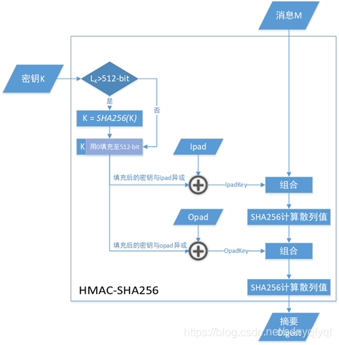

一、名词解释
1. HMAC
全称
- Hash-based Message Authentication Code
- 散列消息认证码
说明
- 使用密码散列函数，结合加密密钥，计算成的消息认证码，主要用于保证数据完整性，同时作为消息的身份认证
2. SHA256
全称
- Secure Hash Algorithm 256
- 安全散列算法256
说明
- 散列函数的一种，对任意长度的数字，计算一个32byte（256bit）的字符串（message digest）
3. RSA
全称
- Rivest-Shamir-Adleman
- 三个人提出的一种加解密算法
说明
- 使用不同的加密密钥和解密密钥
- 已知加密密钥无法推导出解密密钥
二、基本数学知识
1. gcd 最大公约数
全称
- Greatest Common Divisor
2. 互质关系
概念
两个数的最大公约数是1，就是互质关系
说明
- 任意两个质数构成互质关系，比如13和61。
- 一个数是质数，另一个数只要不是前者的倍数，两者就构成互质关系，比如3和10。
- 如果两个数之中，较大的那个数是质数，则两者构成互质关系，比如97和57。
- 1和任意一个自然数是都是互质关系，比如1和99。
- p是大于1的整数，则p和p-1构成互质关系，比如57和56。
- p是大于1的奇数，则p和p-2构成互质关系，比如17和15。
3. 余数的几个定理
3.1. $(a\ mod\ n)\ mod\ n = a\ mod\ n$
- 很好理解，取了余数后再取余数肯定还是自己
3.2. $(a+b)\ mod\ n = (a\ mod\ n+b\ mod\ n)\ mod\ n$
- 设 $a = k_1n+c_1$ ， $b = k_2n+c_2$
$$ (a+b)\ mod\ n = [(k_1 + k_2)n + c_1 + c_2]\ mod\ n = (c_1 + c_2)\ mod\ n = (a\ mod\ n+b\ mod\ n)\ mod\ n $$
3.3. $a^k\ mod\ n = (a\ mod\ n)^k\ mod\ n$
- 由上面的 $(a+b)\ mod\ n = (a\ mod\ n+b\ mod\ n)\ mod\ n$ 就可以直接推出来
$$ a^2\ mod\ n = (a+a)\ mod\ n = (a\ mod\ n+a\ mod\ n)\ mod\ n = (a\ mod\ n)^2\ mod\ n $$
4. $a \equiv 1 (mod\ n)$
代表 $a\ mod\ n = 1$
5. 模反元素
如果 $a\ mod\ n = 1$ 那么一定可以找到一个整数b满足 $ab\ mod\ n = 1$，那么b就是a的模反元素
6. 欧拉函数
定义 $\varphi(n)$ 为小于n的，与n互质的正整数个数，几个特例如下
- 当n为质数 $\varphi(n) = n-1$
7. 欧拉定理
如果 $a\ mod\ n = 1$ 那么一定有 $a^{\varphi(n)}\ mod\ n = 1$
8. 费马小定理
如果p是质数，且a不是p的倍数，则有 $a^{p-1}\ mod\ p = 1$
- 证明很简单，就是p是质数的情况下， $\varphi(p) = p-1$
- 由欧拉定理得证
三、算法描述和实现
1. HMAC-SHA256: 摘要算法
- 使用SHA256生成hash值的HMAC算法
1.1. 算法步骤
- 密钥填充。若密钥比SHA-256算法的分组长度B（512-bit）短，则需在末尾填充0，直到其长度达到单向散列函数的分组长度为止。若密钥比分组长度长，则要用SHA-256算法求出密钥的散列值，然后将这个散列值作为新的密钥；
- 内部填充。将填充后的密钥与被称为ipad的序列进行异或运算，所形成的值为ipadkey。ipad是将00110110这一序列不断循环反复直到达到分组长度；
- 与消息组合。将ipadkey与消息组合，也就是将ipadkey附加在消息的开头。
- 计算散列值。将3的结果输入SHA-256函数，并计算出散列值。
- 外部填充。将填充后的密钥与被称为opad的序列进行异或运算，所形成的值为opadkey。opad是将01011100这一序列不断循环反复直到达到分组长度。
- 与散列值组合。将4的散列值拼在opadkey后面。
- 计算散列值。将6的结果输入SHA-256函数，并计算出散列值，这个散列值就是最终的摘要内容。
1.2. go的上层实现
1 | package main |
2. RSA算法: 非对称加解密
- 参考自 RSA算法原理
2.1. 算法原理
- 任意选取两个不同的大素数 $p$ 和 $q$，计算得到 $n = pq, \varphi(n) = (p-1)(q-1)$
- 选取一个大整数 $e$ 作为加密密钥，满足 $gcd(e, \varphi(n))=1$，所有大于 $p$ 和 $q$ 的素数都可用做 $e$
- 确定 $d$ 作为解密密钥，满足 $(de)\ mod\ \varphi(n) = 1$，即 $de = k\varphi(n) + 1, k \ge 1$，所以，知道 $e$ 和 $\varphi(n)$ 很容易计算出d
- 公开整数 $n$ 和 $e$，保存 $d$
- 将明文 $m$ 加密成密文 $c$，算法为 $c = E(m) = m^e\ mod\ n$
- 密文 $c$ 解密成明文 $m$，算法为 $m = D(c) = c^d\ mod\ n$
- 要求要计算的数据m必须满足 $0 \le m \lt n$
2.2. 密钥安全性
- 给出n无法很快因式分解出p和q，那么就算不出 $\varphi(n) = (p-1)(q-1)$
- 没有 $\varphi(n)$ ，只有e无法算出d，也就是无法算出私钥，所以私钥是安全的
2.3. 算法证明
- 就是要证明 $m = c^d\ mod\ n = (m^e\ mod\ n)^d\ mod\ n$
- 由余数的几个运算性质得
$$ (m^e\ mod\ n)^d\ mod\ n = m^{ed}\ mod\ n $$
- 由 $ed\ mod\ \varphi(n) = 1$ 推出 $ed = k\varphi(n) + 1$
$$ m^{ed}\ mod\ n = m^{k\varphi(n) + 1}\ mod\ n $$
- 加解密的原理的关键就是要证明
$$ m^{k\varphi(n) + 1}\ mod\ n = m $$
1) 当m和n互质
- 由欧拉定理得到 $m^{\varphi(n)}\ mod\ n = 1$
$$ m^{k\varphi(n) + 1}\ mod\ n = m^{k\varphi(n)}\ mod\ n + m\ mod\ n = (m^{\varphi(n)}\ mod\ n)^k + m = 1^k + m = m $$
2) 当m和n不互质
- 由于 $n = pq，m \lt n$ 而p和q互质，那么m只能是p或者q的倍数，就假设是p的倍数
- 由于m是p的倍数，且 $m < n = pq$，那么m一定和q互质，所以 $m^{\varphi(q)}\ mod\ q = 1$，而 $\varphi(n) = (p-1)(q-1)$，那么有
$$ m^{k\varphi(n)}\ mod\ q = m^{k(p-1)(q-1)}\ mod\ q = (m^{q-1}\ mod\ q)^{k(p-1)}\ mod\ q = 1^{k(p-1)}\ mod\ q = 1 $$
- 此式可以推出 $m^{k\varphi(n)} = k_1 q + 1$，且设 $m = k_2 p$
$$
\begin{aligned}
m^{k\varphi(n)} & = k_1 q + 1 \\
m^{k\varphi(n)} \times m & = k_1 q \times m + m \\
m^{k\varphi(n) + 1} & = k_1 q \times k_2 p + m \\
m^{k\varphi(n) + 1} & = k_1k_2 n + m
\end{aligned}
$$
- 正好可以证明 $m^{k\varphi(n) + 1}\ mod\ n = m$
3. ECC算法: 非对称加解密算法
3.1. 算法原理
- 选取椭圆曲线的一个点G，生成一个私钥d，然后公开G和 $Q = dG$作为公钥
加解密
- 加密过程是先选取一个随机数r，将明文m使用公钥G和Q加密生成密文： $\{rG, m+rx_Q\}$
- 解密就是使用私钥d计算，先计算 $rG \times d = rdG = rQ$，然后就有
$$m + r x_Q - r x_Q = M$$
签名验签
- 签名过程是使用私钥签名，选择随机数r，生成一个点 $rG=(x, y)$
- 生成明文M的摘要h的签名： $\{rG, \frac{h+x_{rG}d}{r}\}$
- 验签使用公钥和摘要h计算：
$$ \frac{h}{\frac{h+x_{rG}d}{r}}G + \frac{x_{rG}}{\frac{h+x_{rG}d}{r}}Q = \frac{hr}{h+x_{rG}d}G + \frac{x_{rG}rd}{h+x_{rG}d}G = \frac{(h+x_{rG}d)r}{h+x_{rG}d}G = rG $$
- 和rG对比即可验签通过
4. ECDHE算法: 密钥交换算法
4.1. 算法原理
- 通俗来讲，就是定义了一个椭圆曲线上两个点加法的运算，得到的结果也是椭圆曲线上的一个点
- 由于椭圆曲线上此加法满足交换律、结合律
- 离散域里面将椭圆曲线和mod结合起来，还是满足交换律和结合律
- 私钥就是随机选择的一个数d，确定椭圆曲线和椭圆曲线的基点G，公钥就满足
$$
Q = G + G + … + G = dG
$$
- 两个端分别有 $d_1$ 和 $d_2$，分别基于G算出 $Q_1$ 和 $Q_2$，满足下面的式子
$$
d_1Q_2 = d_1d_2G = d_2d_1G = d_2Q_1
$$
- 两边使用对方的公钥和自己的私钥就可以计算出一个共同的点
(x, y)，其中的x是一样的，这样的x就可以作为对称加密密钥
4.2. 如何保证私钥安全
- 对外暴露的只有G和 $Q = dG$ ，使用Q和G去计算d需要算好久好久，基本需要一个一个尝试d
- 而知道d和G计算dQ则很简单，可以直接使用倍加的方式，即使用 $x \times G + x \times G=2x \times G$ 的原理
- 将d按照二进制分解，从最高位开始算，每遍历一位，结果加上自己（也就是乘2），此位如果是1，结果加上G
- d和G计算dG只需要 $O(\log_2,d)$ ，而Q和G计算d则需要 $O(d)$ 的时间复杂度
- 假设d是256位，那么计算dG则是256个单位时间，而计算d则需要 $2^{256}$ 个单位时间